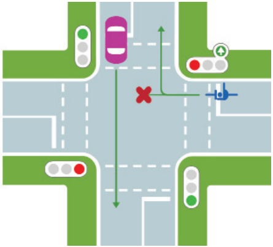

Одна з найцікавіших старовинних споруд Лохвиці. Була збудована у 1800 році і була першою мурованою будівлею у місті. На цьому місці вже існувала дерев'яна церква Благовіщення 1740 року, але вона згоріла. Слово “Благовіщення” має два значення: 1. у християнстві блага вістка від архангела Гавриїла до Діви Марії про те, що вона непорочно зачне від Святого Духа і народить Ісуса Христа, Сина Божого, Месію. Християнське свято, що відзначає цю подію. третє за значенням свято в православії, після Великодня та Різдва. Святкується 25 березня за григоріанським календарем, близько до весняного рівнодення, і 7 квітня за юліанським. У звичаях європейських народів асоціювалося з приходом весни, початком нового землеробського року. Цікаво, що церква збудована у формах класицизму з елементами російського стилю, а давній іконостас прикрашений бароковою різьбою. Зараз Благовіщенська церква - діючий храм УПЦ МП.
Краєзнавчий музей
У старовинному одноповерховому будинку повітового суду 1865 споруди в місті Лохвиця був розміщений краєзнавчий музей імені Г. Сковороди. У 1919 році був заснований музей, колекція якого розташовувалася спочатку на базі реального місцевого училища. Г. Сковорода - письменник і мислитель, уродженець цього краю, саме тому музей носить ім`я поета. Частина експозиції присвячена его творчості і життя.
Сoсновий парк
Прикрасою міста Лохвиця є Сосновий парк. Розташований він майже в центрі міста і займає територію близько 50 га. Народився парк у грізні роки становлення радянської влади. 4 лютого 1921 року голова Лохвицького політвиконкому Степан Кузьмич Луценко на V повітовому з’їзді рад висловлює думку про закладення парку відпочинку для трудящих, як символу нового, вільного життя. У 1922 році під час перших суботників комсомольці та молодь міста посадили чудовий сосновий парк, який став улюбленим місцем для відпочинку лохвиччан та гостей містечка.
АУДІОГІД
00:05:42
01:05:01
Відгуки
Чи поїдете цим маршрутом ще?
Ваші враження чи зауваги
ПРАВИЛА ДОРОЖНЬОГО РУХУ ДЛЯ ВЕЛОСИПЕДИСТІВ
ПРОЇЗД НЕРЕГУЛЬОВАНИХ РІВНОЗНАЧНИХ ПЕРЕХРЕСТЬ
Нерегульоване нерівнозначне перехрестя, головна дорога змінює свій напрямок
Жовтий автомобіль і червоний велосипед перебувають на рівнозначних дорогах;
Перехрестя проїжджає першим червоний велосипед, оскільки у нього немає пере шкоди справа (червоний автомобіль перебуває на другорядній дорозі);
Після проїзду червоного велосипеда у жовтого автомобіля зникає перешкода справа і він може проїхати перехрестя другим;
Синій велосипед і червоний автомобіль перебувають на другорядних дорогах, які між собою рівнозначні;
У червоного автомобіля є перешкода справа – синій велосипед. Тому синій велосипед проїжджає перехрестя третім, а червоний автомобіль – останнім;
Якщо світлофор має додаткову секцію на рівні зеленого сигналу

Cтрілки додаткової секції вказують, куди необхідно рухатися під час її вмикання. В інших напрямках, не вказаних стрілками увімкненої додаткової секції, рух заборонено.
Що робити при велоДТП
Допомога безкоштовно
Що таке ДТП?
це подія, що сталася під час руху транспортного засобу, внаслідок якої загинули або поранені люди чи завдані матеріальні збитки.
Якщо не завдано тілесних ушкоджень і не пошкоджено автомобіль/велосипед - зіткнення не буде вважатись ДТП.
Якщо велосипедисту не завдано серьезних ушкоджень, адмін. штраф - 340грн
Велосипедист несе відповідальність, якщо винен у ДТП.
Чек-ліст: що робити, якщо Ви потрапили або стали свідком велоДТП
Викличте швидку допомогу, якщо Ви, водій або пассажири потребують її. (Отримайте висновок експертизи про тяжкість ушкоджень)
Залишайтесь на місці пригоди. Не переміщайте велосипед.
Повідомте про ДТП поліцію.
Кожен факт ДТП із велосипедистам обов’язково має бути зафіксований поліцією. Ви не можете просто “мирно” розійтись із водієм. Відповідно до ст. 122-4 КУпАП залишення місця ДТП водіями та іншими учасниками дорожнього руху карається штрафом у розмірі 255 грн.
Прослідкуйте аби водій:
увімкнув аварійну сигналізацію
встановив знак аварійної зупинки
не переміщав транспортний засіб та інші предмети, які мають відношення до ДТП
Зафіксуйте розташування автомобіля та велосипеда на фото/відео.
Спробуйте знайти очевидців ДТП та запишіть їхні дані.
Якщо є автомобілі, які зупинились в момент ДТП уточніть чи немає у них відеореєстратора, який зафіксував момент ДТП. Також перевірте чи в найближчих закладах торгівлі/господарювання не встановлено відео-спостереження, яке б могло зафіксувати момент ДТП.
Перевірте документи водія, а саме:
поліс ОСЦПВ
права
реєстраційний документ
Повідомте своїх близьких про те, що ви потрапили у ДТП.
Після приїзду поліції надайте детальні письмові пояснення щодо обставин ДТП.
Які документи оформлювати?
Протокол. Якщо у ДТП винен водій і у велосипедиста немає тілесних пошкоджень, то на водія буде оформлено протокол за ст. 124. Після чого цей протокол буде розглядати суд за місцем вчинення ДТП або проживання водія.
Якщо вашому велосипеду завдано істотної шкоди, ви можете звернутись у страхову компанію водія із письмовою заявою протягом 3 днів. Після отримання рішення суду вам буде виплачено відповідне відшкодування за умови проведення оцінки завданої шкоди.